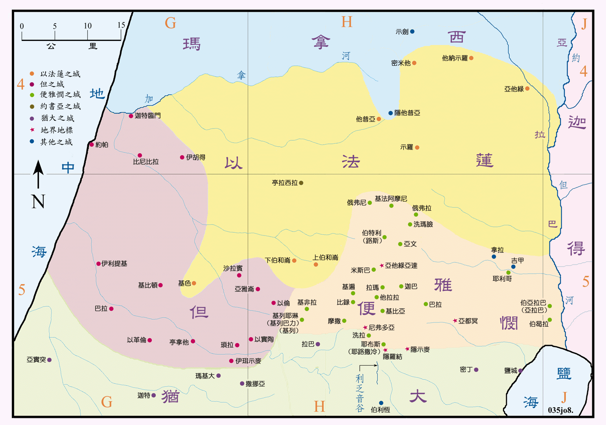

| 圣经 | 说明 |
|---|---|
| 书18:11-20 | 便雅悯支派的边界。 |
| 书18:21-28 | 便雅悯支派的城邑。 |
| 书19:40-46 | 但支派的城邑。 |
| 书19:47 | 但人攻取利善，改名但城。(参看书图10) |
(本图包括以法莲支派最终所得地业之范围。)
第三次的分地是在示罗所举行的，虽然只是分地给所馀的七个支派，但是实际上是对西岸的九个半支派之领土重新作了分配：例如从犹大的地业中分给西缅、但和便雅悯，从以法莲中给了但和便雅悯，玛拿西的北界也清楚了。
便雅悯的南界与犹大的北界相符合，北界说得不清楚，所以图中之北界是按城邑之位置所绘出，其中伯特利和其北的几个城，原来都是属於以法莲的，但现分给便雅悯。便雅悯支派所得之地很小，却拥有耶路撒冷、伯特利和基遍等重要的政治、军事及宗教的重地，是以色列人日后活动的中心。
但支派所得之地，分别取自犹大和以法莲，拥有沿海十分富裕的平原，以及高原的北部，控制了山地往沿海平原的几条孔道，如梭烈谷和亚雅仑谷，所以位置非常重要，成为兵家必争之地。但是也因如此，但支派未能占据，只保有了山地中琐拉、以实陶等一小片地方。在不得已的情形下，只得另寻住地，有一部份人到北方去占领了利善。
以法莲支派的地业在这次分地中，给了但和便雅悯许多的地，所以他的领土比原来所得小了很多。